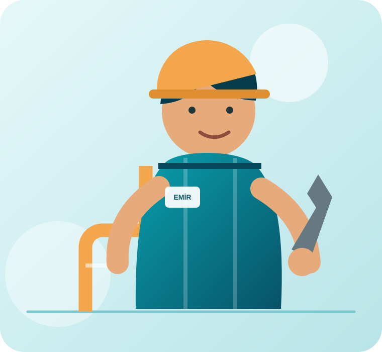

Su Tesisatı
Temiz ve kullanma suyu tesisatlarında oluşan problemlerin bakım ve onarımı.
Bilgi alın →ANTALYA'NIN GÜVENİLİR TESİSAT USTASI
Eviniz ve iş yeriniz için su tesisatı, arıza, bakım ve onarım hizmetleri. İhtiyacınızı anlatın, usta Erkan Aldemir doğrudan yardımcı olsun.

HİZMETLERİMİZ
Mevcut sisteminiz için bakım ve onarımdan yeni uygulamalara kadar güvenilir tesisat çözümleri sunuyoruz.
Temiz ve kullanma suyu tesisatlarında oluşan problemlerin bakım ve onarımı.
Bilgi alın →Tesisat sistemlerinde meydana gelen arızaların doğru tespiti ve onarımı.
Bilgi alın →Arızalı veya eski musluk ve bataryaların tamir ve değişim işlemleri.
Bilgi alın →Lavabo ve gider sistemlerinde meydana gelen tesisat problemlerine çözüm.
Bilgi alın →Banyo ve WC alanlarında tesisat bakım, onarım ve yenileme hizmetleri.
Bilgi alın →Yaşam ve çalışma alanları için ihtiyaç duyulan tesisat uygulamaları.
Bilgi alın →“İşinizi kendi işimiz gibi özenle yapıyoruz.”
HAKKIMIZDA
Emir Tesisat olarak Antalya'da ev ve iş yerlerine tesisat bakım, onarım ve uygulama hizmetleri sunuyoruz.
Amacımız tesisat sorunlarını doğru şekilde tespit ederek müşterilerimize güvenilir ve kalıcı çözümler sunmaktır.
HİZMET BÖLGELERİ
Kepez merkezli olarak dört ilçede ev ve iş yerlerine tesisat hizmeti sunuyoruz.
İLETİŞİM
Sorununuzu telefonla anlatın veya WhatsApp'tan fotoğraf gönderin. Size en uygun çözüm için görüşelim.